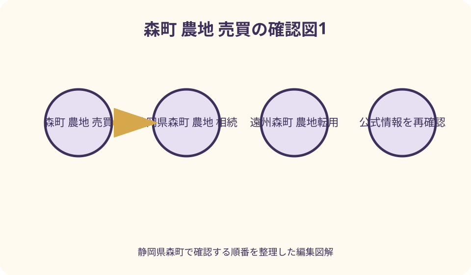
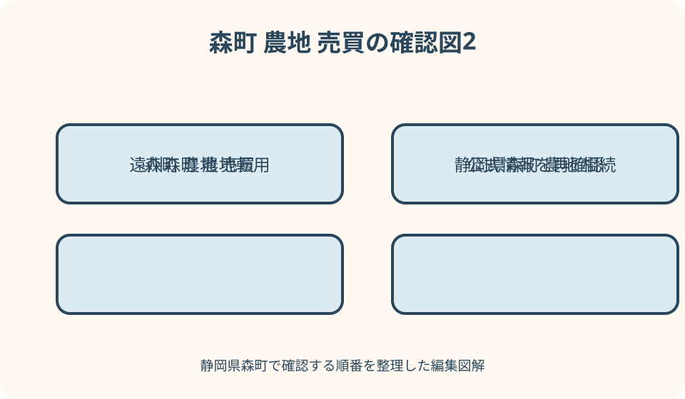

農地・土地利用｜最終確認 2026-08-10
静岡県森町の農地売買・相続・転用｜相談前に地目・用水・進入路を確認
静岡県森町の田や畑について『登記が畑なら売れない』『耕していないから宅地として使える』と早合点すると、相談の入口を間違えます。農地は、耕作を続けるための売買・貸借、相続による取得、所有者自身の転用、転用を伴う権利移動で手続が分かれます。登記地目だけでなく、現在と過去の利用、農用地区域、用水・排水、進入路、耕作者、貸借、土地改良区との関係も個別に確認が必要です。本記事では許可可否や価格を予測せず、森町農業委員会へ持参できる『一筆カルテ』を作る順番を示します。
農地相談は一筆カルテから始める
田畑が数か所に分かれているなら、地番ごとに一枚を作ります。自宅裏、川沿い、山際など通称だけで対象を示しません。
一枚には所在、地番、登記地目、面積、名義人、現況、耕作者、貸借、用水、排水、進入路、隣接地、写真番号を置きます。
同じ家族が所有していても、田と畑、農用地区域の内外、土地改良済みかどうかで確認内容が異なる可能性があります。まとめて結論づけません。
相談日は資料を作った日とは別に記録します。制度、様式、締切、担当は変わり得るため、提出時に最新情報へ戻ります。
登記地目と現況を二列で記録する
登記事項証明書の地目が田・畑でも、現地が休耕、果樹、資材置場、駐車、宅地の一部になっている場合があります。
反対に雑種地等の登記でも、実際の利用状態について農地に当たるか確認が必要な場合があります。表示だけで農地法の対象外とは断定しません。
現況欄には作物、耕起、畦、用水、排水、草木、構造物、土砂投入、車両利用を、確認日と写真で具体的に残します。
過去に許可・届出を受けた転用や土地改良があれば、書類、完了確認、地目変更登記の有無を探し、現在の状態と照合します。
土地の名義と使う人は別に確かめる
登記名義人、税の通知を受ける人、実際に耕す人、用水組合へ費用を払う人が同じとは限りません。それぞれを別欄にします。
親族や近所の人へ口頭で貸している、作ってもらっている、草刈りだけ頼んでいる場合も、開始時期と条件を聞き取ります。
賃貸借、使用貸借、農地バンク経由など権利関係があれば、契約期間、更新、終了、賃料、返還条件を資料から確認します。
所有者が単独で使い方を決められるかは、共有、相続、貸借等で変わります。関係者を把握せず売買や工事の話を進めません。

目的を売買・賃貸・相続・転用へ分ける
耕作する人へ所有権を移す売買と、農地のまま一定期間貸す賃貸は、どちらも農地利用を続ける権利移動として相談します。
相続は売買ではありませんが、農地を取得した事実について農業委員会への届出が関わり、土地の相続登記も別に必要です。
所有者が自ら住宅、駐車場、資材置場など農地以外へ使う場合と、買主・借主が転用する場合では申請の組合せが異なります。
『最終的には家を建てたいが当面は畑』のように目的が固まらない時は、二案を混ぜた申請を作らず、相談で必要な順を確認します。
耕作目的の売買は第3条等の入口へ
森町公式は、耕作目的で農地を売買または貸借する場合、農地法第3条による農業委員会の許可等が必要と案内しています。
買手・借手には、取得後に農地を適切に利用できるか等の確認があります。小面積だから無条件、近所の人だから不要とは考えません。
誰が何を作るか、保有・借受農地をどう管理するか、通作距離、農機、作業日数、地域との調和を具体的に説明できるようにします。
許可前に代金を払い、引渡し、耕作開始をしてよいかは契約条件と合わせて専門家へ確認します。許可を前提にした期限も書面化します。
農地を貸す案は農地バンクも確認する
自分で耕せない時、直ちに売る以外に貸す選択があります。個人間だけでなく、農地中間管理機構を介する農地バンク事業も相談候補です。
森町公式は、制度の一本化や申請書、現在残る契約の扱いを案内しています。古い利用権設定の知識だけで新規手続を決めません。
貸す前に、期間、賃料、用水費、草刈り、畦畔、農道、修繕、返還時の状態、途中解約を確認します。耕作者へ曖昧に任せません。
借手が見つかる時期や条件は保証されません。相談中も雑草、病害虫、水路、近隣への影響を管理する担当を決めます。

農地相続は届出と登記を分ける
森町公式は、相続で農地の権利を取得した人に農業委員会への届出が必要と案内し、届出様式と時期を掲載しています。
農林水産省の農地相続ポータルも、農業委員会への届出と相続登記をそれぞれ必要な手続として示しています。どちらか一方で終わりません。
相続人が複数、遺産分割が未了、名義がさらに前世代、地番が不明などの場合は、戸籍・登記・固定資産資料を司法書士等へ示します。
届出時期や相続登記の期限は、相続を知った日や経過によって確認事項があります。本記事から個別の期限経過や法的効果を判断しません。
相続後に耕す人がいない場合を決める
相続人が農業をしない場合でも、農地が自動的に宅地へ変わるわけではありません。まず当面の草刈り、水管理、見回りを決めます。
近隣耕作者、農地バンク、農業委員会へ貸借や集約の相談ができるかを聞きます。借受けや管理を当然に引き受けてもらえるとは限りません。
売却希望なら、耕作を続ける相手への売買か、転用を伴う売買かで準備が変わります。購入希望者の用途を曖昧にしません。
家族が将来使う可能性を残す場合も、放置とは分けます。管理作業、年間費用、連絡先、再検討日を実家カルテへ記します。
所有者自身の転用は第4条を確認する
農地所有者が権利移動を伴わず、自ら農地以外の用途へ変える場合は、農地法第4条の相談入口となります。
建物を建てなくても、駐車場、資材置場、盛土、通路など耕作に使わない状態が転用に該当する場合があります。工事の有無だけで決めません。
転用目的、面積、配置、排水、進入、造成、資金、工期、周辺農地への影響を図にして、着手前に森町農業委員会へ相談します。
許可不要に見える小規模な農業用施設等も、該当するかは所在地の農業委員会へ確認するよう県公式が案内しています。自己判断で施工しません。
転用目的の売買・貸借は第5条を確認する
農地所有者から買主または借主へ権利を移し、その人が農地以外へ使う計画では、農地法第5条の相談入口となります。
売主・貸主と転用事業者が申請者となるため、土地の売買契約だけでなく転用計画の具体性と実行条件が問われます。
契約には許可が得られない場合、計画変更、費用、手付金、原状、引渡しの扱いをどう置くかが関わります。不動産・法律の専門家へ確認します。
買主が『あとで考える』という段階では、具体的な土地利用計画を示せません。希望用途と配置を固めてから事前相談へ進みます。
農地区分と農用地区域を先に照会する
転用審査では、農用地区域内農地、甲種、第1種、第2種、第3種など、立地条件による区分が関わると県公式が説明しています。
区分名は登記事項証明書の地目欄には書かれていません。地番を示し、農業委員会や関係窓口へ現在の扱いを照会します。
農用地区域からの除外が関わる場合、農地転用とは別の確認や期間が必要なことがあります。二つを同じ許可と誤解しません。
周囲が住宅、道路沿い、長年休耕という見た目だけでは区分と許可可否を判断できません。公式資料と個別相談を優先します。
転用計画は排水と周辺影響まで描く
住宅や駐車場の輪郭だけでなく、出入口、造成高、擁壁、雨水、汚水、給水、工事車両、隣接農地との離隔を図にします。
田を埋めると水の流れや周辺の耕作条件へ影響する可能性があります。地盤、排水、土砂、農業用水を設計者と確認します。
用水路や農道を跨ぐ、付け替える、占用する計画では、管理者の同意や別の手続が必要な場合があります。農地許可だけで完結すると考えません。
県公式は一般基準として事業実施の確実性や被害防除等を示しています。資金と工期も含め、実行できる計画として説明します。
農地付き空き家は家と畑を二契約で見る
空き家の敷地と隣接畑が一つの価格で紹介されても、宅地・建物と農地では権利移動の手続が同じとは限りません。
森町公式は空き家付き農地の取得について、農地の許可要件を示し、空き家と農地で相談先を分けています。
買主が家庭菜園程度を望む場合も、対象が農地なら面積の小ささだけで手続不要とは決めません。耕作計画と管理能力を相談します。
家だけ成約して農地が残る場合、進入、用水、境界、管理をどうするかが新たな課題になります。一体売却の成立を保証しません。
用水は取水から排水まで追う
水田では取水口、用水路、分水、排水路、ポンプ、ゲートの位置と管理者を確認します。水が流れている一日だけで権利を判断しません。
用水費、賦課金、清掃、草刈り、当番、共同作業の有無を、所有者、耕作者、土地改良区等へ確認します。支払者も記録します。
畑でも散水源、井戸、共同管、道路横断管が関わる場合があります。故障時の修繕分担と電気契約を確認します。
転用後に農業用水を生活用や事業用へ使えるとは限りません。用途変更や廃止、排水先を管理者と設計者へ事前に相談します。
進入路は農機と契約車両で確認する
畑へ歩いて入れることと、トラクター、収穫車、軽トラックが出入りできることは別です。幅、曲がり、勾配、橋、路面を測ります。
進入路が公道、農道、私道、畦道、他人地の通路のどれかを調べ、通行・補修・掘削の権利と負担を確認します。
現在の耕作者が隣地から好意で入っている場合、その利用が買主や次の借手へ当然に引き継がれるとは限りません。
転用工事では大型車や資材搬入が増えます。農地へ入れる道でも工事車両に耐えられるか、道路管理者と施工者へ確認します。
境界と畦畔を同じものにしない
畦、水路、法面、樹木列が登記上の境界と一致するとは限りません。公図、地積測量図、境界標、現況を照らします。
水路の両側や細い道に別地番がある、共有、町有、土地改良区管理などの可能性も確認します。見た目で売買面積へ含めません。
境界が不明な時は土地家屋調査士等へ相談し、測量範囲、隣接者確認、費用、時期を整理します。農繁期の立入りにも配慮します。
越境する樹木や構造物を見つけても、直ちに撤去せず所有者と管理者を確かめます。現況写真へ撮影方向と日付を付けます。
耕作管理を年間カレンダーにする
農地管理は草刈り一回では終わりません。耕起、畦畔、用排水、病害虫、鳥獣、収穫残さ、農道清掃を季節別に並べます。
茶畑、田、露地畑、果樹では作業と機械が異なります。相続人が経験なしで同じ管理を続けられると仮定しません。
農薬、肥料、燃料、農機、倉庫、廃資材が残る場合、所有者、状態、処分・移譲方法を確認します。勝手に買主へ含めません。
耕作を止める場合も、雑草、倒木、火災、不法投棄、水路閉塞、隣地への種子飛散を防ぐ担当と見回り頻度を決めます。
地域計画と周辺耕作者へ配慮する
森町は農地の将来利用に関する地域計画を公表しています。対象地周辺の担い手や集約の方向を相談材料として確認します。
地域計画に記載があるから売買や貸借が自動成立するわけではありません。変更手続や関係者との調整が関わる場合があります。
一筆だけの判断でも、用水、農道、作業効率、まとまりに影響します。隣接耕作者の作業を妨げない出入口・境界条件を考えます。
地域の話合いと個人の契約は役割が異なります。口頭合意を許可や契約書の代わりにせず、どの段階の合意かを記録します。
価格より先に負担項目をそろえる
農地の売買価格だけでは、測量、登記、許可申請支援、用水費、土地改良、草刈り、残置物、造成等の負担は分かりません。
見積を取る時は、対象地番、面積、作業範囲、申請者、成果物、追加条件、許可不成立時の扱いをそろえます。
近隣取引や固定資産評価をそのまま売買相場とみなしません。農地の状態、権利、進入、集約性、契約条件が異なります。
税については取得、保有、譲渡、相続で論点が変わります。特例や納税猶予の適用を記事から判断せず、税務署・税理士等へ確認します。
相談資料を地番順に並べる
農業委員会へは地番一覧、登記事項証明書、公図、位置図、現況写真、所有者・耕作者、現在の契約、希望用途を持参します。
転用なら配置、造成、排水、進入、周辺農地、資金、工期を追加します。売買・貸借なら相手方の耕作計画や既存農地を整理します。
相続なら被相続人、相続人、取得日、登記状況を示します。農業委員会の届出と法務局の登記で必要資料が同じとは限りません。
質問は『できますか』だけでなく、農地区分、必要手続、申請者、添付資料、締切、審議、完了後の届出を一項目ずつ聞きます。
相談先を手続ごとに分ける
農地法の売買・貸借・相続届出・転用は森町農業委員会の農地管理係を最初の窓口にします。着手後ではなく計画段階で相談します。
相続登記や所有権移転登記は法務局の公式案内を確認し、必要に応じ司法書士へ相談します。境界・表示登記は土地家屋調査士が候補です。
転用計画は設計者、造成・排水は施工者、売買契約は不動産事業者や弁護士、税は税務署・税理士等へ論点を振り分けます。
土地改良区、用水組合、道路管理者、上下水道、都市計画など別管理者が関わる場合があります。農地許可だけで全手続が終わるとは限りません。
図解1：四つの入口へ進路を分ける
入口Aは農地として売る・貸す道です。相手の耕作計画と第3条等を農業委員会へ相談します。
入口Bは相続です。農業委員会への届出、相続登記、当面の耕作管理を並行して整理します。
入口Cは所有者自身の転用です。第4条を軸に目的、配置、排水、進入、資金、工期を提示します。
入口Dは転用する人への売買・貸借です。第5条を軸に両当事者、契約条件、転用計画を一体で確認します。
図解2：一筆を空・水・道・人で見る
空からは地番、形、隣接地、農地のまとまりを地図で見ます。航空写真だけを境界図として使いません。
水は取水から排水まで線で追い、管理者、費用、清掃、転用後の扱いを記します。雨の日の流れも安全に確認します。
道は農機、管理車、工事車両の三種類で幅と権利を見ます。徒歩で入れるだけでは利用条件を説明できません。
人は所有者、相続人、耕作者、借手、隣接者、管理組織を置きます。誰の同意・申請・説明が必要かを相談します。
良い点：確認表は利用を続ける時にも役立つ
地番ごとの一筆カルテは、売却を見送って耕作、貸借、管理を続ける場合にも、用水や契約の引継ぎ資料になります。
森町公式には、耕作目的の権利移動、相続、転用、農地付き空き家の各案内があり、目的別に準備を始められます。
農地バンクという貸付けの相談経路もあり、自作か売却だけの二択を避けられます。ただし借手と条件の成立は別に確認します。
用水、進入路、管理を先に見れば、購入後・相続後の作業を家族で具体的に話せます。土地の広さだけの判断から離れられます。
注文したい点：休耕を自由利用と誤解しない
長く作物を作っていない土地でも、耕作可能な休耕地・不耕作地は農地転用の対象となり得ると県公式が説明しています。
砂利を敷く、車を置く、資材を置く行為も転用に当たる場合があります。小規模・一時的という自己判断で着手しません。
農地付き空き家の紹介文から、畑部分も住宅と同時に取得できると決めません。農地の許可と耕作管理を別に見ます。
許可申請を出せば必ず通る、締切どおりなら必ず予定日に許可されるという保証はありません。補正や他手続の時間も見込みます。
代案・結論：目的が未定なら管理を先に決める
売るか転用するか家族で決まらない時は、今年の耕作、草刈り、用水費、見回り、隣接者連絡を先に割り当てます。
転用が難しい可能性を指摘されたら、農地として貸す、周辺耕作者へ集約相談する、対象範囲を変える、利用を継続する案を比べます。
相続手続が途中でも、現況写真、地番、耕作者、契約、用水、道を集めることはできます。売却価格の話より事実整理を進めます。
結論は、土地を一筆ずつ特定し、使い続けるのか、相続したのか、用途を変えるのかを言葉にしてから窓口へ行くことです。
家族に残す農地記録を更新する
農地版の実家カルテには地番、名義、地目、面積、現況、境界、用水、排水、進入路、耕作者、契約、費用を記します。
許可書、届出控え、農地バンク契約、土地改良資料、用水連絡、作付記録、農機台帳、現地写真の保管場所を一覧にします。
家族会議では、売りたいという意向と、売買できる条件が確認済みという事実を分けます。反対意見も日付と理由を残します。
相談回答は担当機関、回答日、示した資料、追加確認、次の期限を記します。口頭で得た一般論を個別地番の許可判断へ変えません。
大石の視点：値段の前に水と道を歩く
小さな不動産実務の目線では、農地へ着いたら境界だけでなく、水がどこから入りどこへ出るか、農機がどこで曲がるかを見ます。
私は、休耕地ほど『何もない土地』に見せないことが大切だと考えます。共同管理、畦畔、用水、地域の作業が土地を支えています。
登記地目と現況が違う時、先に都合のよい方を採用せず、過去の許可・届出、利用経過、専門窓口の確認をつなぎます。
売却未定でも一筆カルテを家族へ残せば、次の相続人が地番探しから始めずに済みます。価格より引継げる情報を先に整えます。
まとめ：農地の目的と現場条件を一緒に示す
森町の農地は、耕作目的の売買・貸借、相続、所有者転用、転用を伴う権利移動で相談入口が違います。
地目と現況、所有者と耕作者、用水と排水、進入路、境界、管理を地番ごとに記録すると、必要な質問が見えます。
農地法の条文番号は入口であり、許可可否の答えではありません。最新様式と審議日程を森町農業委員会へ確認します。
売買価格、転用成功、法律・税務上の結論を保証せず、一次情報と現地資料をそろえて担当窓口・専門家へ相談することが最短です。
公式情報・確認先
掲載内容は次の一次情報を基礎に整理しました。営業、料金、催し、交通は変わるため、出発前または手続き前にリンク先で最新情報を確認してください。
- 森町耕作目的での農地の売買・貸借（静岡県森町、2026-08-10確認）
- 森町農地の相続について（静岡県森町、2026-08-10確認）
- 森町農地を農地以外のものにする場合（静岡県森町、2026-08-10確認）
- 森町空き家付き農地の取得（静岡県森町、2026-08-10確認）
- 森町地域計画（静岡県森町、2026-08-10確認）
- 静岡県農地転用許可制度（www.pref.shizuoka.jp、2026-08-10確認）
- 農林水産省農地相続ポータル（www.maff.go.jp、2026-08-10確認）
- 静岡地方法務局（houmukyoku.moj.go.jp、2026-08-10確認）